Blog de Pesca Marítima
El concepto de pesca marítima se utiliza para referirse a las actividades pesqueras realizadas y realizadas en agua salada, porque se realiza en el mar.
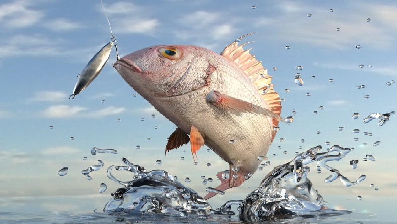
Tipos de pesca
(Costa)
(Los más practicados y más populares)
Pesca al jigging
El jigging consiste en arrojar el cebo artificial libremente sobre el fondo marino y restaurarlo a un ritmo constante mediante el movimiento del hilo y la caña de pescar. Esto simula la trayectoria de un pez pequeño hacia la superficie y se convierte en una atracción para capturar peces grandes.
Hay dos tipos de abrazaderas: duras y blandas. El accesorio blando consta de una gran cabeza de plomo y un simple gancho a través del cual pasa un pequeño cuerpo de silicona. Proporcionan un movimiento realista y son muy efectivos para los peces que comen lentamente. Sin embargo, no funcionan bien en la parte inferior, caen lentamente y muestran una gran resistencia a la corriente. Por otro lado, los accesorios duros son tan largos o cortos como las hojas y, a diferencia de los accesorios blandos, caen rápidamente y brindan excelentes resultados en profundidad. Dependiendo de la distribución del peso en la zona trasera o central y la naturaleza asimétrica de su perfil, capturarán mejor uno u otro pez.
Spinning mar
La práctica del spinning de mar es una de las modalidades de pesca deportiva que se está poniendo cada vez más de moda, ya sea desde tierra o desde embarcación. Como hemos dicho consiste básicamente en lanzar un señuelo e ir recogiendo, mediante un movimiento atractivo hacia la muestra, para que sea atacado por el depredador.
Tendrás que coger el cebo artificial con un pequeño toque, de esta manera intentar que el pez trabaje en forma de zigzag y produzca un efecto de vibración, como un insecto o una rana intentando atacar al pez que queremos pescar. El dominio de las técnicas de pesca con hilado y el uso de materiales de pesca adecuados, se puede decir que el hilado nunca capturará especies de caza como besugo, peces y truchas. Dependiendo de la potencia del equipo de pesca que use mientras gira, puede usar cebos artificiales en la superficie, en el agua o en las profundidades. Hemos visto cómo los cebos artificiales imitan a los peces pequeños del entorno que los rodea, porque son otro alimento en la dieta de los peces cazadores.
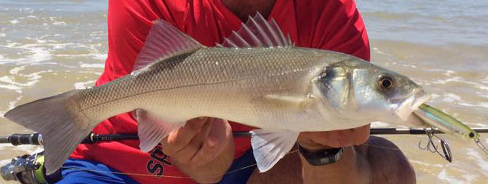Surfcasting
El surfcasting es una modalidad de pesca deportiva o de afición, consistente en la pesca con caña de pescar, que se realiza desde la orilla de la playa. Es una forma de pesca muy conocida y relajante, excepto cuando es de competición.
Instruir los escenarios adecuados es muy simple: cualquier arenal, especialmente aquellos con un área limitada, no es necesario que tenga montañas, arrecifes y bajíos alternando con lenguas de arena. Estas playas habituales se independizan de otras zonas por separación, pasando gradualmente de arena pura a bahía pedregosa o una de las típicas cantos rodados o cantos rodados, pero esto no descarta la posibilidad de pescar grandes doradas de la costa. La playa de un kilómetro de largo, estos peces visitan en su viaje nutricional.
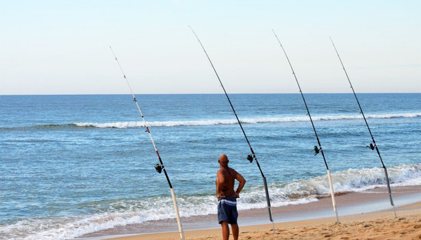Rockfishing
El rockfishing, o spinning ultraligero, es el nombre que se le da a la pesca con señuelos artificiales de muy pocos gramos. Por ello, el objetivo del rockfishing es capturar peces de pequeño tamaño con equipos muy ligeros, de forma que se disfrute al máximo cada captura.
El rockfishing es una modalidad de pesca deportiva dedicada a pequeñas presas que habitan en desembocaduras, acantilados, fondos rocosos y espigones portuarios. Esta técnica se practica con señuelos pequeños y equipos muy ligeros. Las especies que se pueden capturar mediante esta técnica son bastante amplias, aunque varían según la zona. El equipo y los señuelos que se emplean en esta técnica están destinados a peces pequeños, aunque en muchas ocasiones se pueden capturar peces inmaduros, por eso debemos respetar ante todo las tallas mínimas.
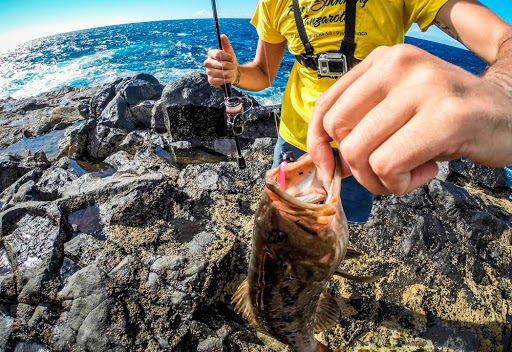Lugares de pesca
Pesca al jigging
En esencia, el jigging desde la orilla implica el lanzamiento de señuelos pesados, o jigs, en varios lugares submarinos profundos cerca de la costa. Los mejores lugares para este tipo de pesca son:
- Acantilados rocosos
- Muelles
- Embarcaderos
Spinning mar
El mar es tan grande y hay tantos posibles lugares donde tirar la caña que nos pueden asaltar dudas muy razonables, pues si nos ponemos a pescar en el primer sitio al que llegamos, es muy posible que nos volvamos a casa sin capturas, deberíamos probar en:
- Los grandes arenales
- Espigón playero
- Los puertos
Surfcasting
Quizás es unos de los mejores lugares para pescar buenos y numerosos peces son:
- Arenales con fondos rocosos
- Arenales de fondos planos
- Rías
- Desembocaduras
- Lagunas costeras
- Arenales de fondos planos
- Grandes escolleras
Rockfishing
Como puedes imaginar, considerando la gran variedad de capturas, la zona de pesca apta para cualquier persona para la pesca en roca puede ser cualquiera:
- Diques y escolleras de puertos
- Playas con fondos arenosos o mixtos
- Playas con fondos rocosos
- Roquedos y pequeños acantilados
- Canales de agua salda o dulce (salientes al mar)
Fauna Marina
(peces)
Especies de peces costa del Mediterráneo
Dentro de los peces más valorados del mediterráneo están:
- El salmonete 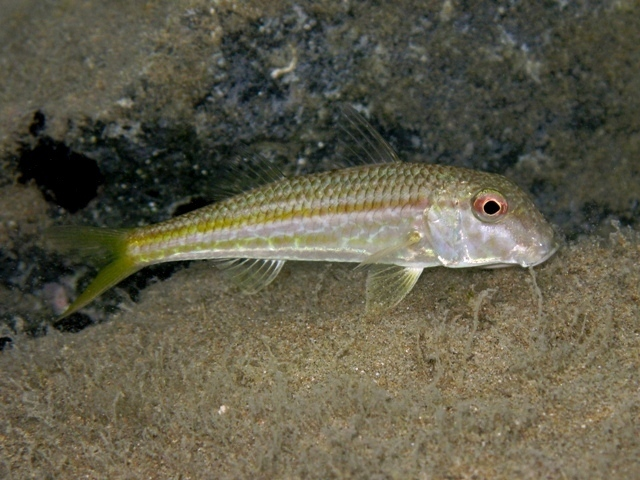
- El lenguado 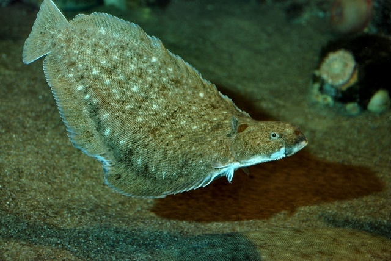
- La merluza 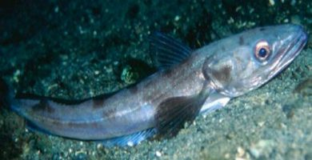
- El dentex (o déntol) 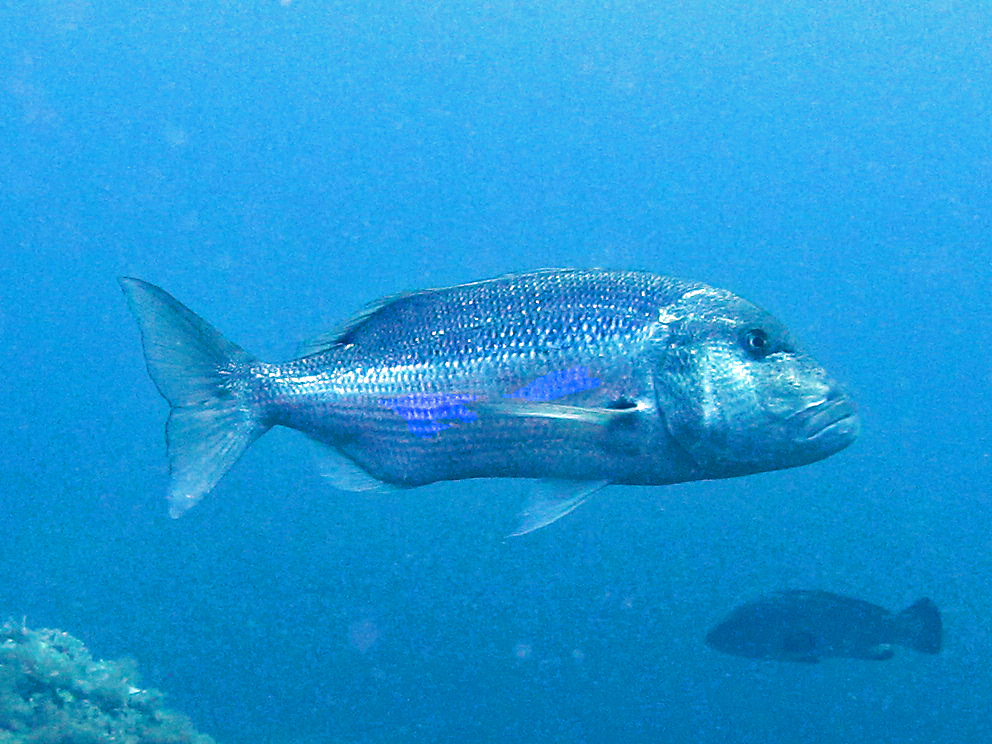
- El Mero 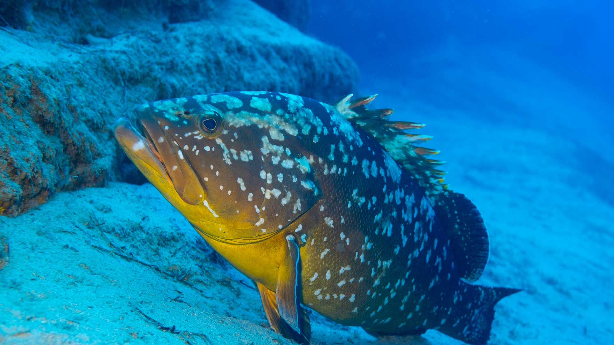
- La dorada 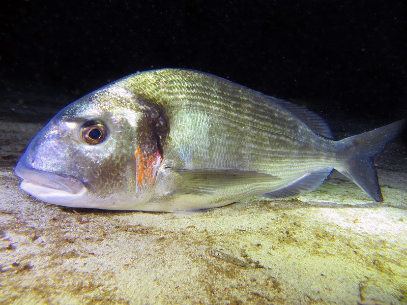
Especies de peces costa del Mediterráneo
Como pescado muy común encontramos la familia de los diplodus que son una especie peciforme conformada por sargos de todo tipo:
- Sargo real 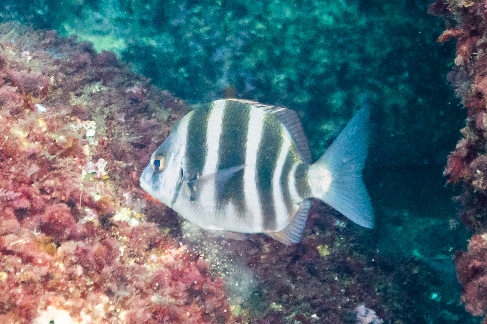
- Sargo común 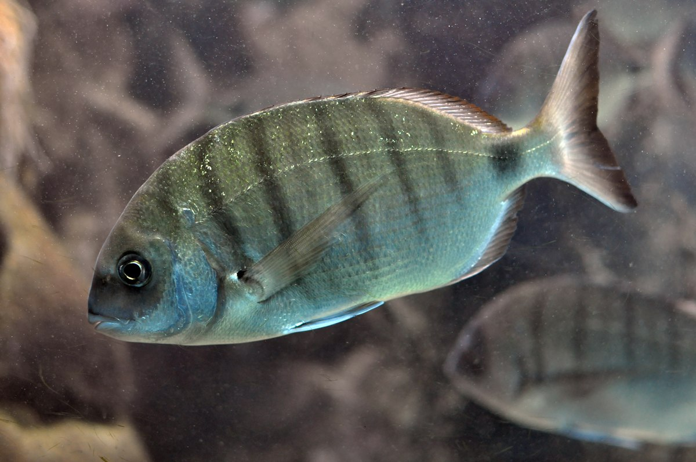
- Mojarra 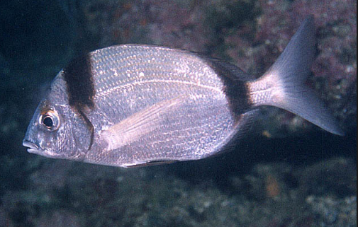
- Raspallón 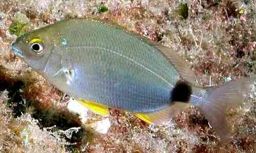
- Sargo picudo 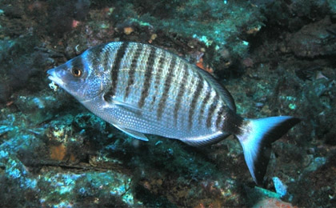